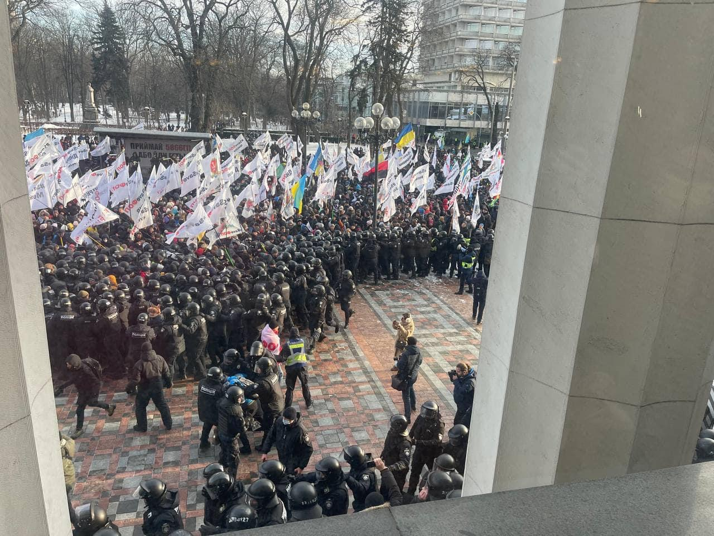
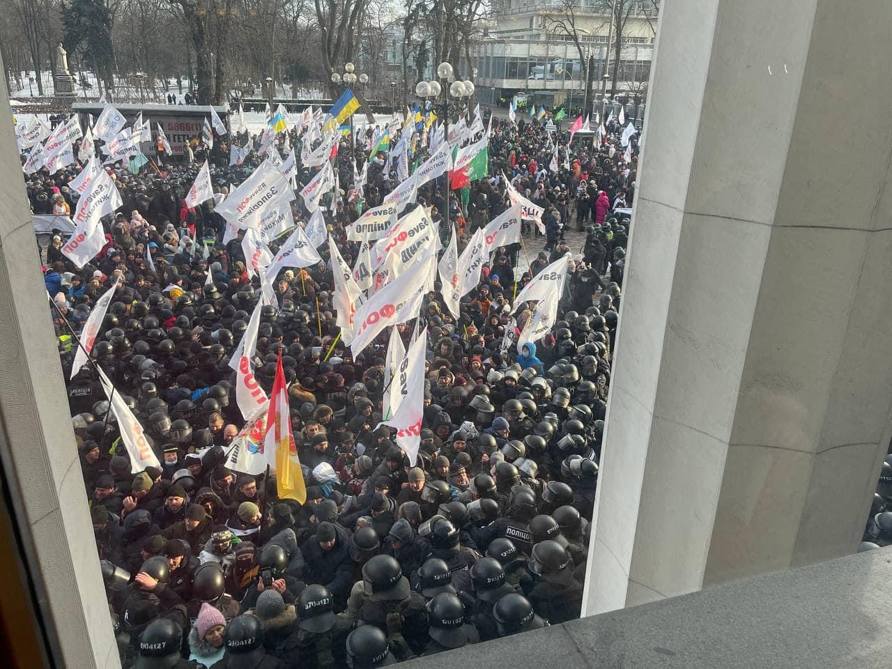
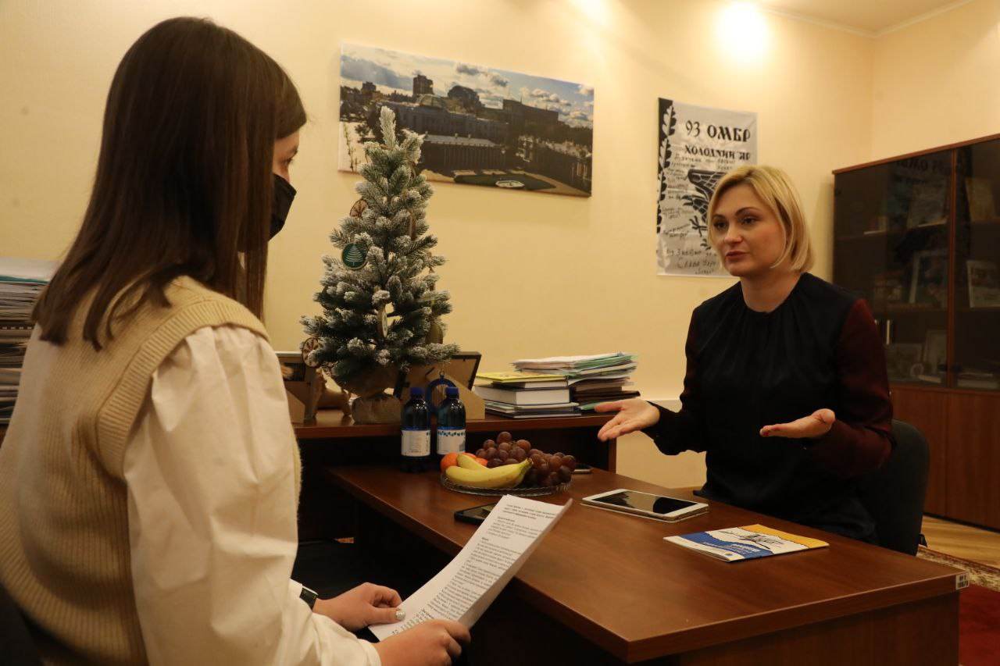
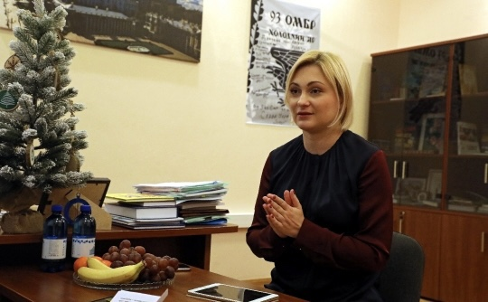
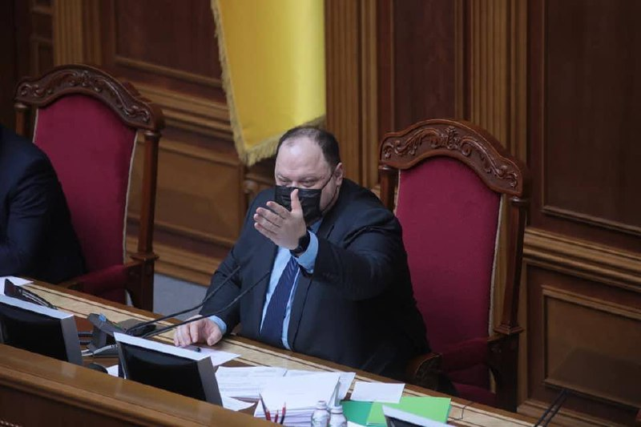
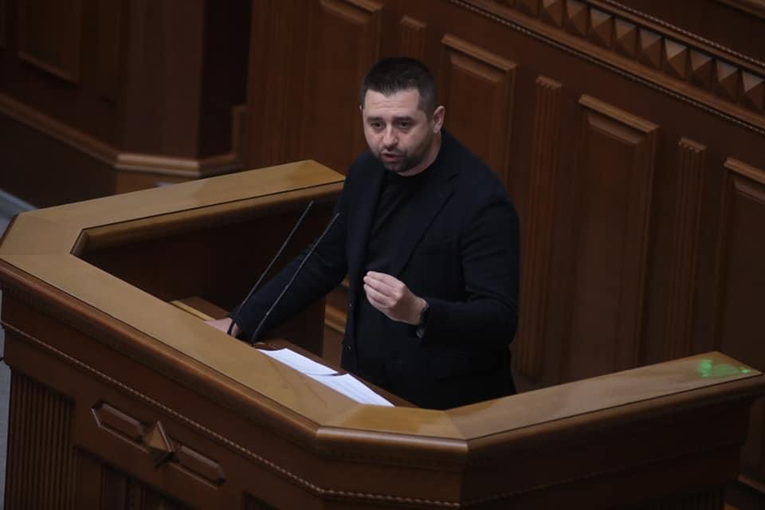
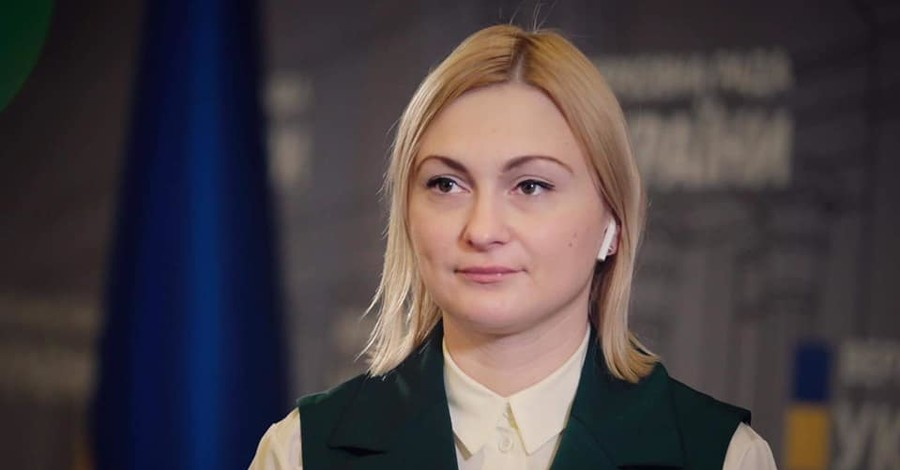

ФОПи прорвали паркан біля Ради
Учасники акції руху "SaveФОП" прорвали паркан біля будівлі Верховної Ради.
Про це з місця події повідомляє кореспондент видання.
Так, близько двох тисяч мітингувальників зламали паркан та намагаються штурмувати будівлю парламенту.
Їх стримують кілька сотень правоохоронців.
Між учасниками акції та правоохоронцями відбувається штовханина.
Журналістів та народних депутатів не випускають з будівлі Верховної Ради.
Передумови протестів
Як повідомлялося , 25 січня під будівлею українського парламенту розпочалася акція руху «SaveФОП» під назвою «Влада, приймай або йди геть!», учасники якої протестують проти тотальної фіскалізації, тобто використання касових апаратів.
Згідно з законодавством, із 2022 року майже усі ФОПи зобов'язані використовувати касові апарати. Зокрема, 1 січня 2022 року завершився термін відтермінування дії закону про обов'язкове застосування реєстраторів розрахункових операцій (РРО), так званих касових апаратів, для ФОП, які є платниками єдиного податку другої-четвертої груп. Його відтермінували у грудні 2020 року після акцій протестів підприємців, які скаржилися на неможливість вести бізнес з використанням касових апаратів під час карантинних обмежень. Тоді депутати прислухалися до вимог підприємців.
Водночас 17 грудня 2021 року депутати провалили голосування за те, щоб відтермінувати обов'язкове застосування касових апаратів. "За" відповідний законопроєкт № 6376 проголосували лише 102 депутати при необхідних 226.
Рух «#SaveФОП» — український громадський рух, учасники якого виступають за зменшення фінансового навантаження на малий та середній бізнес шляхом продовження для приватних підприємців спрощеної системи оподаткування.
Джерело: авторські новини для Укрінформу
Нацрада з питань телебачення і радіомовлення може отримати повноваження регулювання інтернет-ЗМІ в разі ухвалення законопроєкту "Про медіа" — Кравчук
Національна рада України з питань телебачення і радіомовлення може отримати повноваження регулювання інтернет-ЗМІ в разі ухвалення законопроєкту "Про медіа".
Про це розповіла заступниця голови парламентської фракції "Слуга народу", заступниця голови Комітету ВР з питань гуманітарної та інформполітики, народний депутат Євгенія Кравчук.
Деталі законопроєкту
Так, за її словами, є лише два дискусійних питання, які призупинили ухвалення проєкту закону. Зокрема, йдеться про регулювання Інтернет-ЗМІ. "Зараз усі з телебачення переходять на Інтернет-платформи чи платформи спільного доступу, а це ніяк не регулюється. Дуже багато ОТТ-платформ російські. Вони заходять на український ринок. Ми тут розповідаємо про квоти, а вони там "шарашать" російські серіали і люди можуть купувати їх навіть за акційними цінами. Це оновлення обов’язково відбудеться", – зауважила Кравчук.
Вона уточнила, що в разі ухвалення законопроєкту відповідним регулювання займатиметься Національна рада України з питань телебачення і радіомовлення. "Ми хочемо, щоб регулятор був один, бо типи порушень однакові і для телевізійних каналів, і для інтернету, але рівні відповідальності і ризиків різні", – наголосила парламентарій.
Депутат пояснила, що реєстрація Інтернет-ресурсу буде необов‘язковою, а добровільною. Однак Кравчук підкреслила, що представник зареєстрованого ресурсу вважатиметься журналістом, а його діяльність захищатиметься відповідними законами.
Другим дискусійним питанням політик назвала заяви великих телевізійних холдингів про ймовірне перевищення повноважень регулятора. "Вони вважають, що буде якийсь терор, цензура. Насправді, якщо розглядати більш детально ці норми, багато з них уже є в законодавстві, але потребують удосконалення", – додала вона.
Кравчук поінформувала, що консультації щодо законопроєкту відбуваються постійно, але не змогла спрогнозувати, коли документ може бути ухвалено. За її словами, цей законопроєкт є одним "із найскладніших для того, щоб проголосувати його навіть за це скликання".
Як повідомлялося, у липні 2020 року в парламенті зареєстрували доопрацьований законопроєкт про медіа. Однак через хвилю критики та відсутність цілковитої підтримки його не виносили на голосування.
Джерело: авторські новини для Укрінформу
Рада готова до будь-якого розвитку подій у контексті військової агресії РФ проти України – Стефанчук
Верховна Рада готова до будь-якого розвитку подій у контексті військової агресії Російської Федерації проти України.
Про це заявив Голова ВР Руслан Стефанчук під час брифінгу в парламенті.
"Ми пропрацювали всі можливі випадки, які стосуються діяльності Верховної Ради України. По кожному напряму ми відповідну логістичну стратегію, як діяти у випадку якщо… Ми з точки зору парламенту готові до будь-якого розвитку подій, але більше ясності буде після того, як ми завтра зустрінемося з міністром оборони", – сказав спікер парламенту.
Він уточнив, що Верховна Рада перебуває на постійному зв‘язку з українськими силовими структурами, Кабінетом Міністрів та Президентом. Стефанчук наголосив, що парламент готовий негайно ухвалювати рішення, яких потребуватиме безпекова ситуація в державі. "У нас є необхідне забезпечення, необхідне законодавче напрацювання на будь-який розвиток подій, тому в цьому питанні за парламентом не буде ніяких затримок… Ми будемо виконувати ті функції, які покладені на парламент швидко та ефективно", – підкреслив Голова ВР.
Як повідомлялося, з кінця жовтня Росія стягує війська до українських кордонів. Західні ЗМІ з посиланням на джерела повідомляли, що російське вторгнення в Україну може статися на початку 2022 року, до цього залучать близько 175 тис. військовослужбовців РФ. Ситуація біля східного українського кордону викликає занепокоєння серед чиновників США та країн Європи.
Джерело: авторські новини для Укрінформу
У Раді регулярно відбуватимуться закриті зустрічі з силовиками – Арахамія
У Верховній Раді відтепер регулярно відбуватимуться закриті зустрічі з представниками силових структур України.
Деталі
Про це повідомив голова парламентської фракції "Слуга народу" Давид Арахамія під час брифінгу у ВР.
"Ми домовилися. Я не можу зараз вам сказати точні дати, але ми хочемо запросити також пана Баканова (голова Служби безпеки України – ред.), запросити голову зовнішньої розвідки (Олександр Литвиненко – ред.)... Поступово будемо проводити такі наради", – сказав політик.
Середній курс купівлі 10 російських рублів упав на 2,9 коп. та становить 3,257 грн. Середній курс продажу знизився на 1,7 коп. – до 3751 грн. Мінімальний курс готівкової покупки, пропонований банками, – 2 грн за 10 російських рублів, максимальний – 3,55 грн. Для продажу мінімальний курс – 3,65 грн, максимальний – 3,9 грн.
Арахамія уточнив, що для участі в закритих зустрічах необхідно мати доступ до державної таємниці. Він висловив сподівання, що колеги по парламенту отримають цей доступ, написавши відповідну заяву, і матимуть можливість продуктивно працювати в такому форматі.
Як повідомлялося, перед початком пленарного засідання 25 січня відбулася закрита робоча зустріч за участі керівництва Верховної Ради, міністра оборони Олексія Резнікова та голів парламентських фракцій і груп щодо питань національної безпеки та оборони.
Джерело: авторські новини для Укрінформу
У "Слузі народу" обговорять питання відповідальності депутатів, які долучилися до "Команди Разумкова" – Євгенія Кравчук
У "Слузі народу" обговорять питання відповідальності народних депутатів, які долучилися до громадської організації "Команда Разумкова".
Про це заявила заступниця голови фракції "СН" у Верховній Раді, парламентарій Євгенія Кравчук.
Що сказала Кравчук
"Ми обов’язково це обговоримо і на рівні керівництва фракції, і на рівні заступників, на засіданні фракції, напевно, це треба буде обговорити", – констатувала вона.
На думку Кравчук, парламентарії, які ввійшли до ГО "Команда Разумкова", не хочуть виходити з фракції "Слуга народу", бо списочники можуть втратити мандат.
"Це просто сидіння на двох стільцях – будувати свою кар’єру в іншій політичній силі, пройшовши за списком, це навіть не мажоритарка. У випадку мажоритарки якийсь відсоток успіху залежав від людини, хоча "зелений прапор", особливо, у певних регіонах, зокрема, в Києві гарантував високий рейтинг. Якщо Роман Соха вийшов із фракції, то деякі колеги не поспішають цього робити, бо не хочуть втрачати мандат депутата. Ми обов’язково це обговоримо", – зазначила заступниця голови фракції "Слуга народу".
Як повідомлялося, Верховна Рада на пленарному засіданні 7 жовтня 2021 року відкликала Дмитра Разумкова з посади Голови Верховної Ради. На відповідну посаду 8 жовтня призначено колишнього першого заступника Голови ВР Руслана Стефанчука.
Пізніше Разумков оголосив, що створює міжфракційне об'єднання "Розумна політика".
У грудні минулого року Міністерство юстиції України зареєструвало громадську організацію "Команда Разумкова". У керівництві організації народні депутати із парламентської фракції "Слуга народу" Василь Мокан і Неллі Яковлєва. Обласні осередки також очолили деякі парламентарії з "СН".
Джерело: авторські новини для Укрінформу